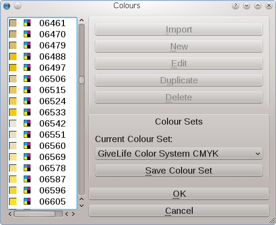

La GiveLife Color System® è un'azienda spagnola fondata da grafici e tecnici per creare nuovi sistemi di colore per professionisti della grafica e del design, specialmente nel mondo ispanico.
Finora la GiveLife Color System® ha sviluppato due sistemi di colore numerici, uno in RGB e uno in CMYK. Scribus è il primo programma di grafica che contiene nella sua installazione le raccolte di colore GiveLife Color System®.
|  |
Questa raccolta comprende 2265 colori CMYK, ciascuno dei quali ha un codice numerico a cinque cifre. Il sistema è stato sviluppato per l'uso in progetti destinati alla stampa. Per questa raccolta l'azienda offre sul suo sito un campionario stampato. Questa “guida ai colori” è stata creata usando il profilo ICC FOGRA 39 (ISO 12647-2:2004).
La seconda raccolta comprende 5101 colori RGB, ciascuno dei quali ha un codice numerico a quattro cifre. Il corretto profilo ICC da usare con questa raccolta è l'sRGB.
Osservate che dovete installare i profili suddetti per poter usare questi colori in modo affidabile.
Il team di Scribus collaborerà con la GiveLife Color System® per assicurare che gli aggiornamenti alle raccolte esistenti e i nuovi sistemi di colore siano messi a disposizione degli utenti di Scribus anche in futuro.